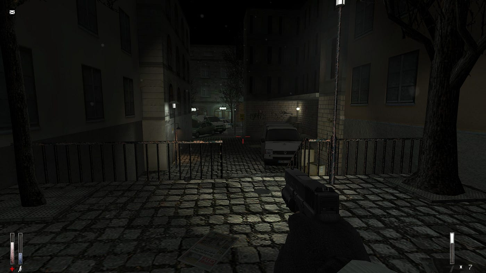
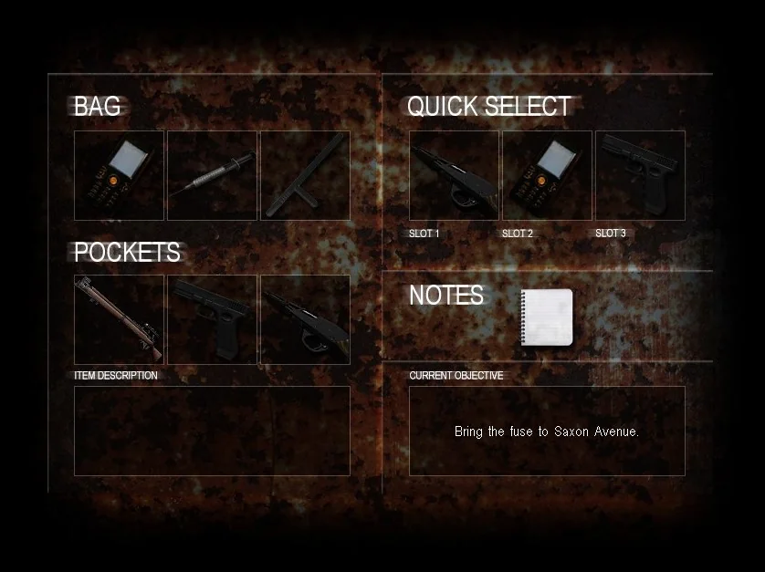
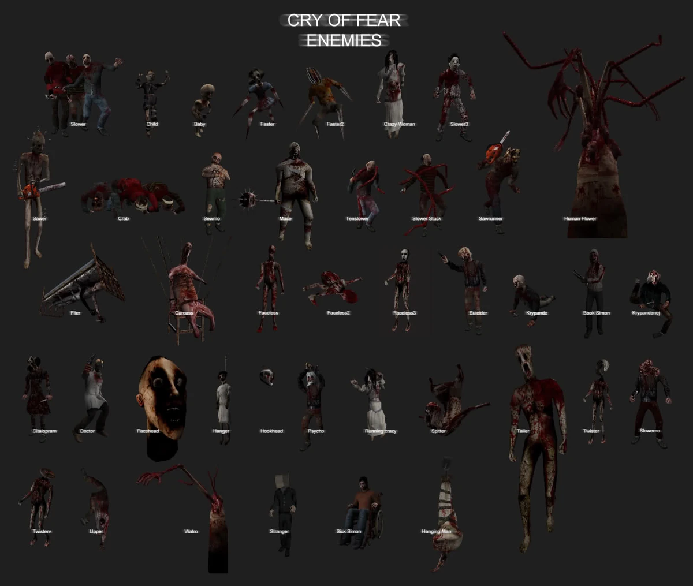
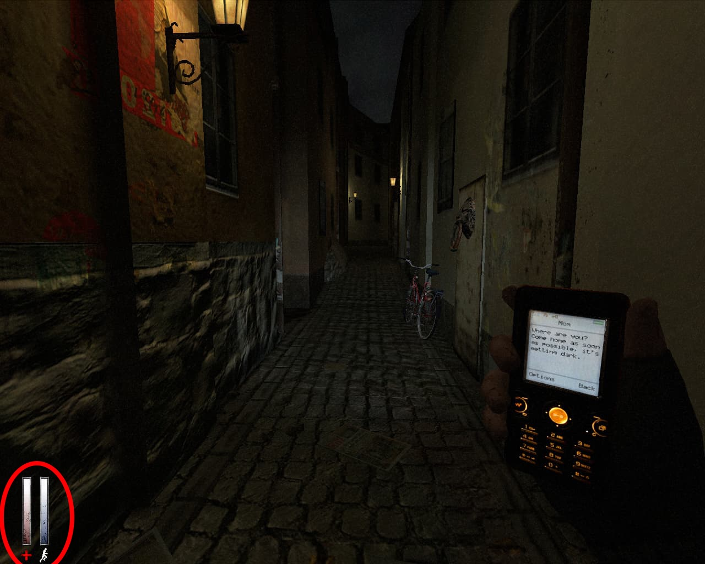
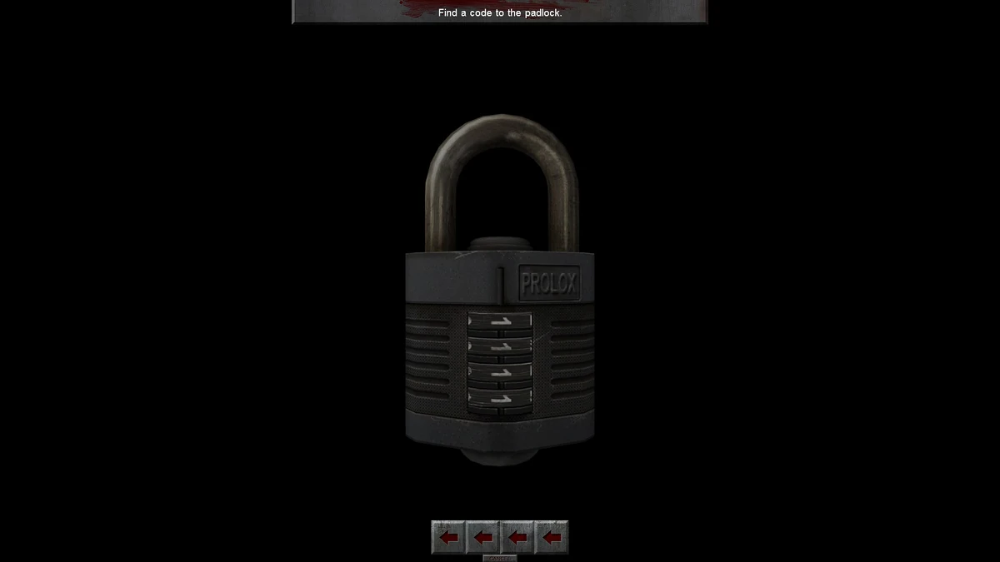

Cry of Fear Game Trailer
Introduction
Cry of Fear is a psychological survival horror game released in 2012 as a standalone mod for Half-Life. Developed by the indie team Team Psykskallar, it combines classic horror elements with modern narrative techniques to deliver an unforgettable experience. The game is praised for its haunting atmosphere, deeply emotional story, and innovative use of limited resources and survival mechanics. It’s also notable for being free-to-play and developed by a small team. Cry of Fear uses its narrative, gameplay mechanics, and atmosphere to immerse players in a world of dread and psychological tension.
Setting
Cry of Fear is set in a desolate, unnamed Scandinavian city, where the protagonist, Simon Henriksson, navigates a dark, decaying urban environment. The game shifts between the real world and Simon's distorted perceptions, blending reality with nightmarish, surreal elements. Key locations include abandoned streets, creepy indoor spaces like hospitals and basements, and unsettling, twisted versions of familiar settings. The atmosphere is dark and oppressive, with minimal lighting and eerie sound design, creating constant tension. The setting serves as a reflection of Simon’s psychological trauma, guilt, and mental deterioration.
Narrative Analysis
Storyline
Simon wakes up in a distorted city, where he faces terrifying monsters and bizarre visions. As the story unfolds, Simon discovers memories of a troubled childhood and strained relationships, particularly with his mother. The central mystery is whether Simon can escape the horrors of both the city and his mind. Sara, a mysterious woman, plays a key role in Simon’s emotional journey, but her true purpose is revealed as the story progresses.
Themes
- Trauma & Mental Health: The game delves deeply into Simon’s psychological breakdown, showcasing how trauma can distort perception and shape one’s reality.
- Guilt & Redemption: Simon grapples with guilt over his past actions and seeks redemption, although the outcome is ambiguous.
- Isolation: Both physically and emotionally, Simon is cut off from the world, highlighting his inner loneliness and mental disarray.
- Reality vs. Illusion: The blurred line between reality and illusion reflects Simon’s deteriorating mental state, forcing the player to question what is real.
Symbolism
- Monsters: Represent Simon’s inner demons—his guilt, fear, and unresolved trauma.
- The City: A symbolic representation of Simon’s fractured mind, full of decay and confusion.
- Sara: Initially a symbol of comfort, Sara becomes a representation of Simon’s unresolved guilt and emotional pain.
- Mirrors: Symbolize self-reflection and the difficulty Simon has in facing his own truth.
- The Knife: Represents Simon’s self-destructive tendencies and emotional turmoil.
Conclusion
Cry of Fear offers a psychological horror experience that uses its narrative, themes, and symbolism to explore mental health, trauma, and self-acceptance. The game’s atmosphere and storyline invite players to delve into the protagonist's mind, challenging them to confront the darkest aspects of human psychology.
Gameplay Mechanics
Survival Horror
Limited Resources: Scarce ammunition, healing syringes, and a limited inventory creates a constant worry over carrying too many unnecessary items. A scarcity of items forces you to be strategic and plan how to go about combat in the game.
Exploration: Cry of Fear has levels that require a thorough search of dark cooridors, abandoned buildings, and outdoor environments. Clues are scattered throughtout the maps in the forms of notes, visual clues, or locked doors (Ex. "This door requires a code"). This makes exploration essential in order to decipher clues and unlock hidden items.
Combat
Weaponary: Weapons in Cry of Fear range from knives and hammers, to firearms like pistols and shotguns. You have the ability to dual-wield certain weapons allowing you to use your flashlight in one hand while wielding a weapon in the other. This method however sacrifices accuracy for convienence of visibility.
Enemies: Enemies are gross, nightmarish, zombie-like manifestations that are tied to Simon's mental state. Each encounter with the monsters was terrifying. These enemies have erratic movements as the player you are tasked with deciding to fight and waste resources or run.
Mechanics
Phone Torch: The map is shrouded in darkness, making the flashlight an essential tool for survival. However, the flashlight’s limited range leaves much of the environment in shadow, enhancing fear of the unknown.
Stamina: Running depletes Simon’s stamina, which takes time to regenerate. Low stamina slows Simon down, making him more vulnerable to enemy attacks. This forces players to carefully manage movement, choosing when to flee and when to stand their ground.
Sanity As Simon’s psychological state deteriorates, the game reflects this through disorienting visual effects, eerie sounds, and sudden, unnerving changes in the environment. Rooms may appear different upon re-entry, and subtle hallucinations keep you on edge.
Puzzles
Progression often requires solving puzzles, such as deciphering cryptic notes, finding keys, or figuring out how to unlock doors. These puzzles test your observational skills and logic, adding a cerebral layer to the gameplay.
Unique Features
Mobile Phone: Simon’s phone acts as a multipurpose tool, serving as a flashlight, map, and communication device. Eerie, unexpected text messages and phone calls add to the horror atmosphere.
Co-Op Mode: A multiplayer option allows up to four players to team up and face unique challenges together. Although it changes the dynamic, it retains the horror tone and encourages teamwork. I did not get to try out this method but perhaps in the future I will.
Replayability: Player choices throughout the game—such as how they interact with NPCs or their approach to combat—affect the outcome of the story. This encourages multiple playthroughs to experience the full narrative and uncover alternate endings.
Atmosphere and Aesthetics
The atmosphere of Cry of Fear plays a pivotal role in creating a chilling and immersive survival horror experience. Combining eerie visuals, haunting sound design, and emotional depth, it crafts a world that is as unsettling as it is compelling.
Visual Design
The game uses a low-resolution aesthetic reminiscent of early 2000s titles, enhancing horror through ambiguity. Dark lighting and desaturated tones dominate, while visual glitches mirror the protagonist’s mental state. The flashlight mechanic limits visibility, amplifying fear of the unknown.
Sound Design
Ambient audio creates an unpredictable soundscape, from distant whispers to dissonant drones. Sudden musical cues and the strategic use of silence heighten tension. The echo of footsteps or muffled crying adds layers of dread.
Emotional Tone
Exploring themes of loneliness and trauma, the game’s environments and enemy designs reflect the protagonist’s struggles. Jump scares are used sparingly, but the oppressive atmosphere creates a constant sense of vulnerability.
Influences and Style
Drawing from Silent Hill and Resident Evil, the game blends psychological horror and resource-driven gameplay. Its urban aesthetic and first-person segments make it stand out as a unique survival horror experience.
Pictured below in order, Silent Hill 2: The Remake, Cry of Fear, and Resident Evil 4.

Conclusion
Cry of Fear offers a unique take on psychological horror by blending survival mechanics with a deeply unsettling narrative. Its atmosphere, shaped by eerie visuals and a haunting soundtrack, immerses you into a nightmarish world where reality and delusion blur. The game's mechanics, especially its use of limited resources and psychological manipulation, not only challenges you but also draws you into the Simon's struggle with his own mind. While its story may be cryptic at times, it’s this ambiguity that adds depth to the experience, leaving you with more questions than answers. As a psychological horror title, Cry of Fear is a standout example of how games can engage with mental health themes, using gameplay and narrative to create an emotionally charged atmosphere. It may not be for everyone, but for those willing to dive into its dark, disturbing world, it’s a game that lingers long after the screen goes dark.
Cry of Fear Download Requirements
Cry of Fear is free to download on Steam. Listed below is a link to the storepage as well as the minimum and recommended requirements for the game. These requirements are listed directly on Steam's store page for Cry of Fear as well.
Cry of Fear storepageMinimum:
- OS: Windows® 7 (32/64-bit)/Vista/XP
- Processor: 1 GHz
- Memory: 1024 MB RAM
- Graphics: 128MB Video Card with OpenGL support
- Hard Drive: 5 GB HD space
- Additional: Microsoft .NET Framework 4 Required
Recommended:
- OS: Windows® 7 (32/64-bit)/Vista/XP
- Processor: 2 GHz
- Memory: 2048 MB RAM
- Graphics: 512MB Video Card with OpenGL support
- Hard Drive: 7 GB HD space
- Additional: Microsoft .NET Framework 4 Required
Kumu Network
.
Youtube Reviews
Below are Youtuber who have reviewed the game as well. I used these videos to help gain other perspectives of the game to allow myself to find anything I may have missed during my play throughs.
Pyrocynical


Markiplier

Copyright credit
Game trailer and related content courtesy of Team Psykskallar on YouTube.
Video content by Pyrocynical on YouTube.
Video content by Markiplier on YouTube.